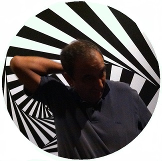

Hi, I'm Claudio Tosti.
I was born in 1958 in Rome, where I have always lived.
I am married and have two daughters.
I have been passionate about programming with any medium since the 70s.
For me to program on a '74 Sinclair Cambridge Programmable (with 36 programming steps)
it was as exciting as doing it with the ZX 81 or the Commodore AMIGA 500 (with the "wonderfully squeezed" 7 MHz of its CPU).
Then I used Fortran '77 for work and gradually over the years I switched to modern Object Oriented languages.
Now I am retired but I have the same "powerful desire and childish wonder" to play with logic, mathematics, graphics, geometry, words.
With Droidscript I started using the "mobile".
I really appreciate Python, but when I met "Processing" I became deeply interested in this "world"
(including the APDE mobile environment) and Daniel Shiffman's articles and videos were helpful.
Then with the P5.js libraries I realized it was time to play with the browser and after looking around
I "loved" the community of "Happy coding".
With Kevin Workman's tutorials I decided to build this site with GitHub Pages.
So I thank Kevin for inspiring me with this decision, following his welcoming site "Happy Coding" and
having been kind enough to directly suggest me the choice of "uploading" the code on the web
Anyone wishing to contact me can write to me at the e-mail address: panchifab@outlook.it
Ciao!